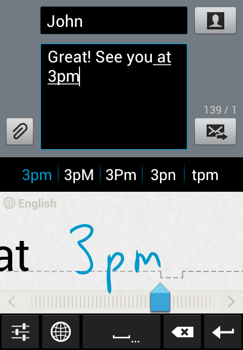

The below use cases are only examples of applications where SLTW has been used, sometimes with additional features. Note that all available features for the SLTW are listed in the API reference.
Here is an integration example of the Single Line Text Widget in MyScript Stylus Mobile for Android. In this scenario, the user handwrites a text message on a smartphone. Candidates and editing gestures can be used to modify text.
